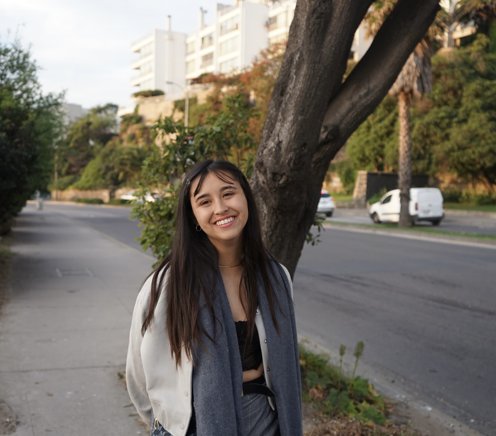
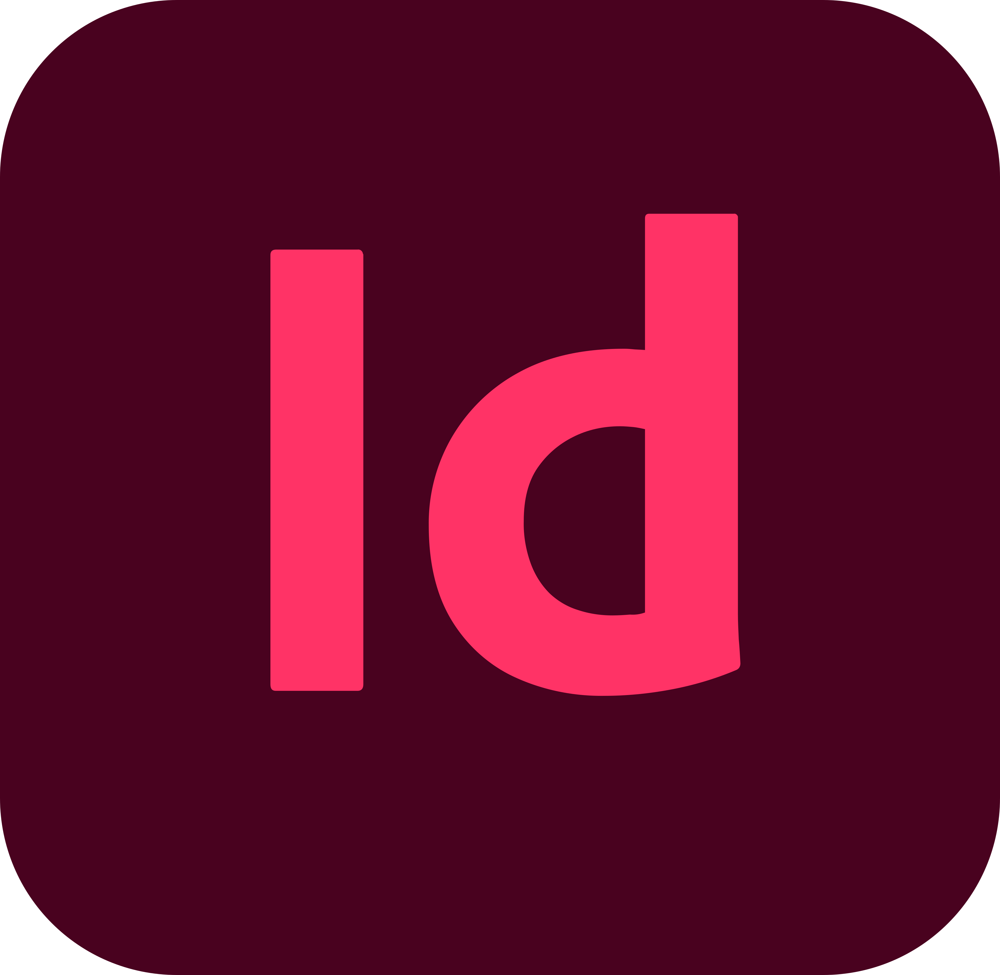
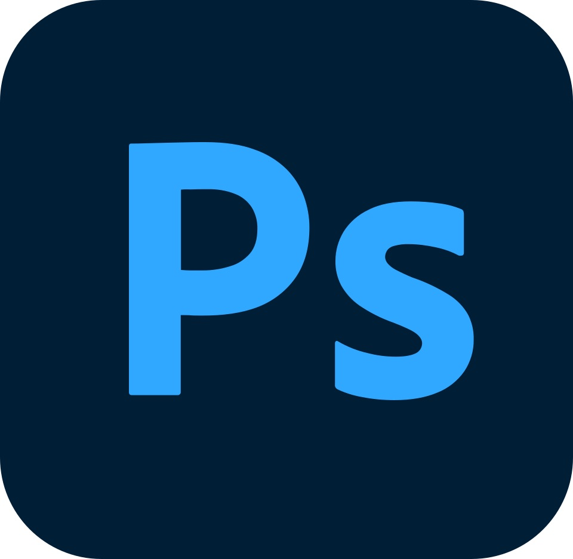
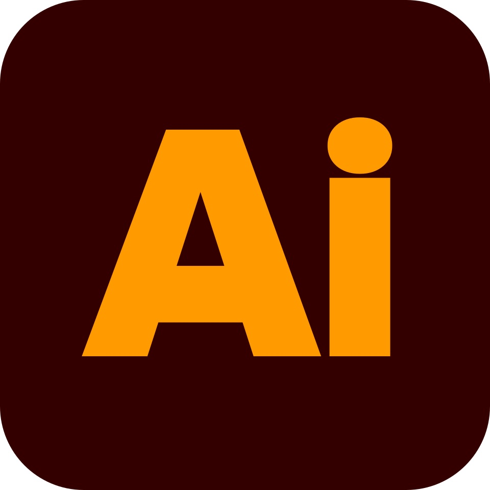
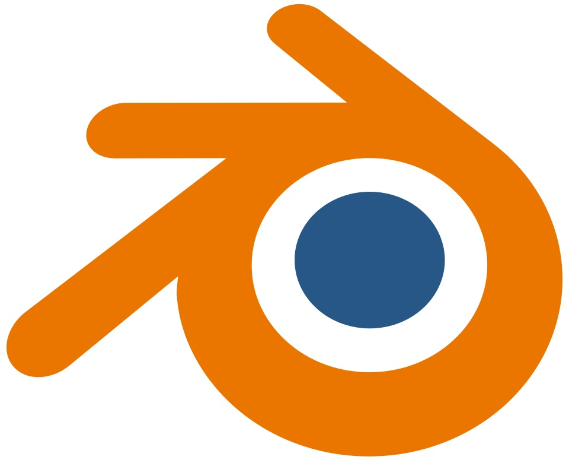

Diseño
Una práctica amplia y flexible.
He explorado diseño gráfico, editorial, interacción, servicios, interfaces y herramientas digitales, combinando observación, investigación y producción visual.
Hola, soy

Estudiante de Diseño en la Pontificia Universidad Católica de Valparaíso, con formación previa en Artes Visuales y especial interés en diseño gráfico, editorial, UX/UI, experiencias digitales y procesos análogos.
Perfil
Diseño
He explorado diseño gráfico, editorial, interacción, servicios, interfaces y herramientas digitales, combinando observación, investigación y producción visual.
Artes visuales
Mi formación previa en Bellas Artes, con especialidad en pintura, aporta una mirada sensible hacia el color, la composición, la materialidad y los procesos manuales.
Lo principal
Selección de trabajos académicos y personales, con espacio para imágenes, procesos y resultados.
Explorar proyectos → 02Pasantías, talleres, formación académica, herramientas y conocimientos construidos a lo largo de los años.
Ver experiencia → 03Correo, LinkedIn y vías para conversar sobre prácticas, proyectos, colaboraciones o trabajo.
Contactarme →Herramientas






¿Trabajamos juntas/os?